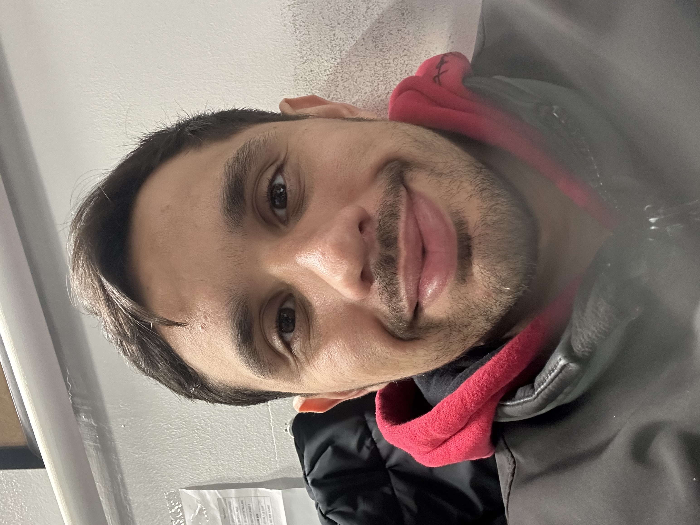

My Resume
Jokin E. Diaz E.
jokinoficial@gmail.com | 986-647/6898 | Miami FL, 33178

Summary
Skilled Electronic Engineer with a deep knowledge about Quality Control, Industrial Operations and Engineering developments.
More than 8 years working on the industrial area. Mathematecally and technically astute with analytical nature and project
managment stregth.
Education
Bachelor of Science: Electronic Engineering | Universidad De Falcon | Falcon - Venezuela | 02/2019
Experience
Quality Control Inspector | Alpine Fresh | Doral, FL | 01/2022 - Current
- Identified production concerns and worked with supervisors to understand and remedy situations.
- Examined products and materials for defects or deviations to remove or discard non-conforming items.
- Used specialized tools to take precise measurements of various aspects of samples. Recommended essential corrective actions based on test results.
Services Engineer & Catalyst Specialist | Crealys LA | Vina del Mar, Chile | 08/2019 - 11/2021
- Improved and refined methods, process steps or procedures and implemented changes. Tested and inspected machinery or equipment to diagnose machine malfunctions.
- Database administration and KPI development
- In charge of carrying out the catalyst loading services in Latin America
Maintenance Coordinator | PDVSA | Punto Fijo, Falcon - Venezuela | 07/2016 - 08/2017
- Managed schedule of repairs to guarantee arrival of parts, equipment and resources needed to satisfy job requirements.
- Supervised preventive maintenance projects, employee tasks and performance and adherence to safety standards.
- Managed team of employees, daily progress reports and overall project planning.
- Performed preventive maintenance tasks and checked facilities and grounds for issues needing attention.
Refining Operator - Supervisor | PDVSA | Punto FIjo, Falcon - Venezuela | 06/2014 - 07/2016
- Operated and Supervised of machines associated to plant's packing operations.
- Analyzed operational performance to identify pain points and provided actionable solutions to management.
- Evaluated and reported on department metrics to upper management.
Skills
- Production Experience
- Quality Control
- Data Analysis
- Project Management
- Mathematical Calculations
- KPI Monitoring
Contact Me